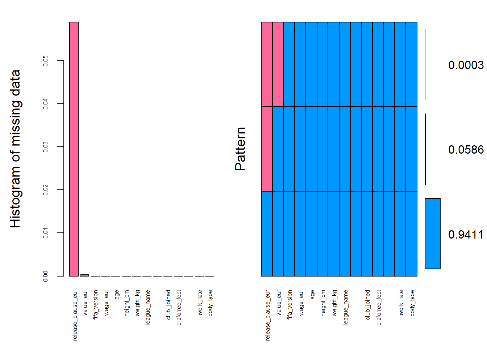
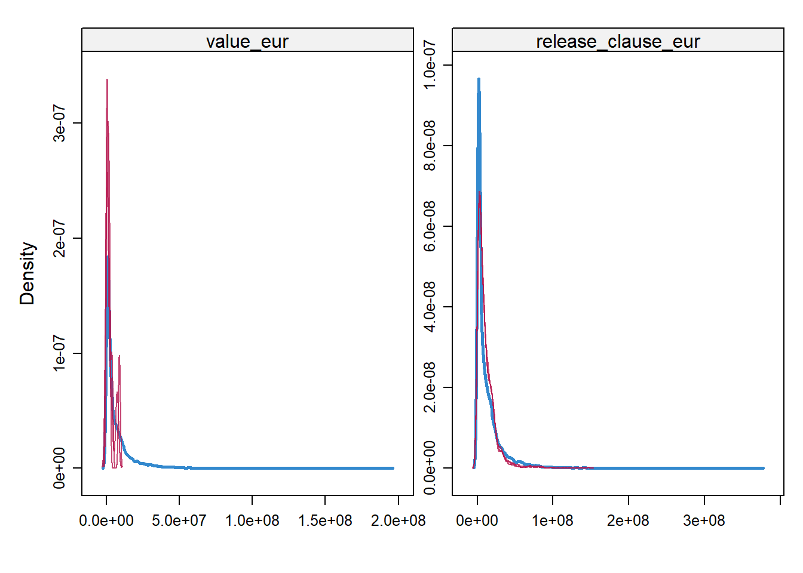
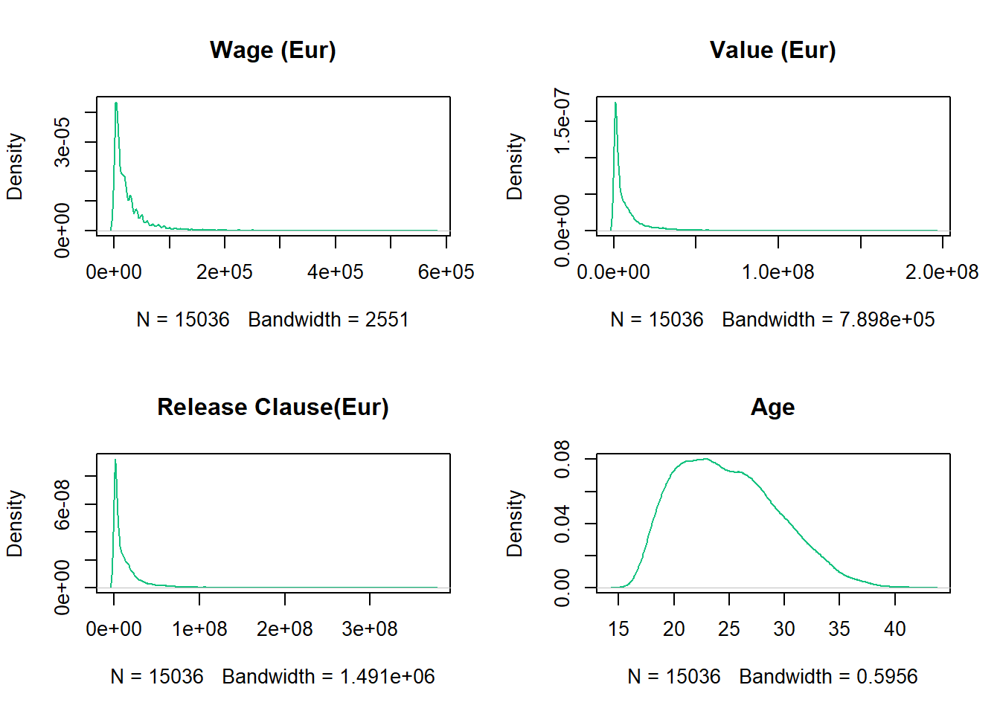
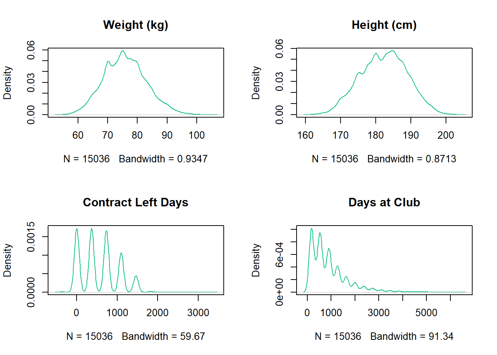
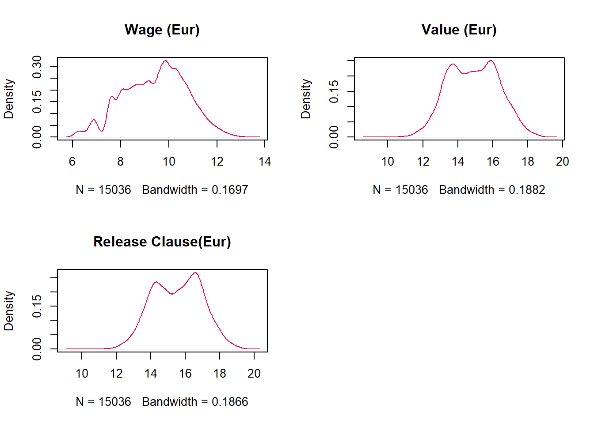
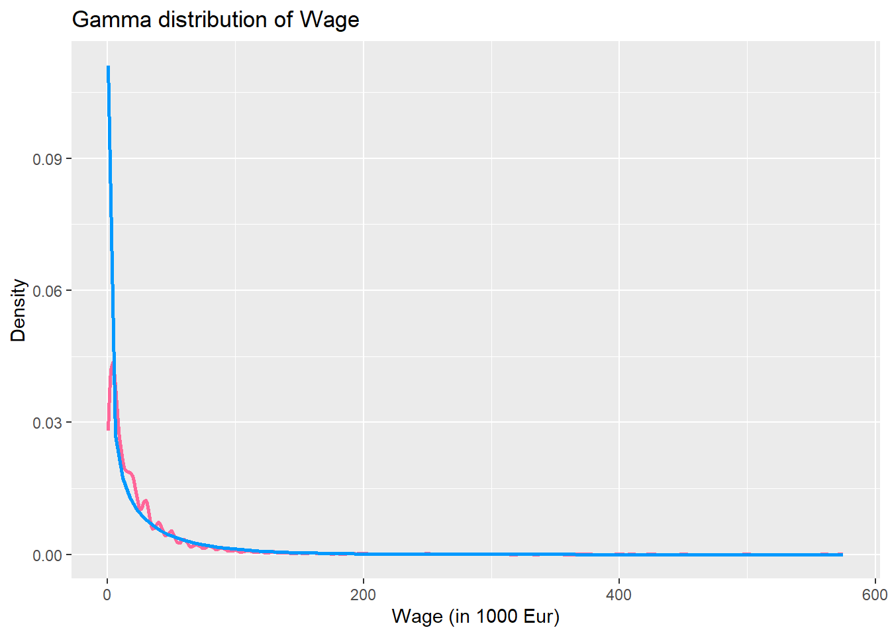
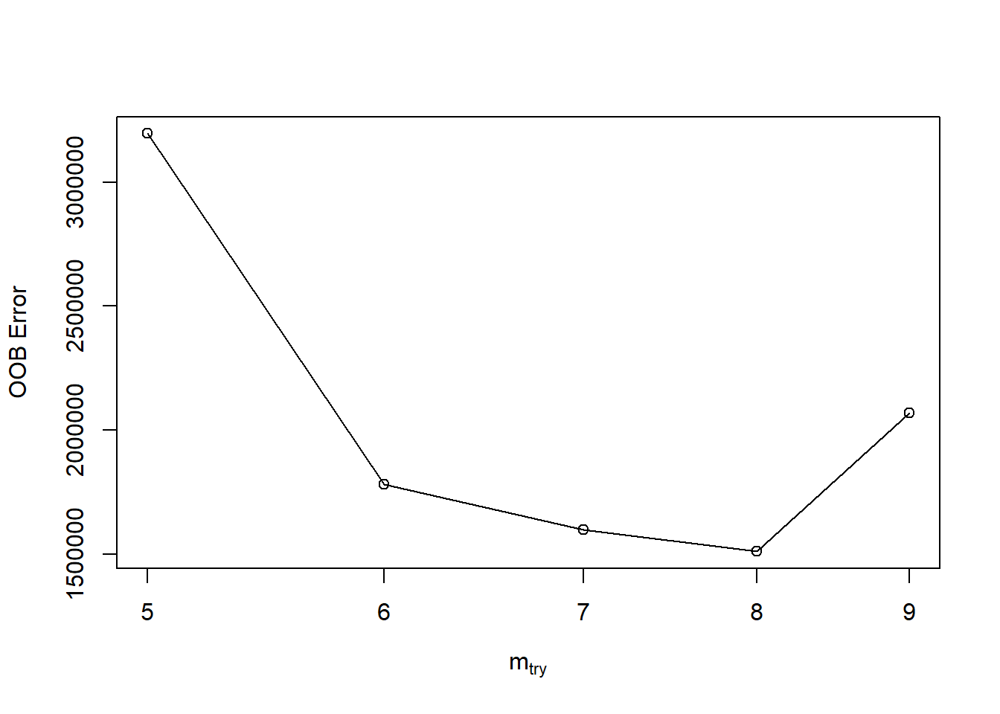
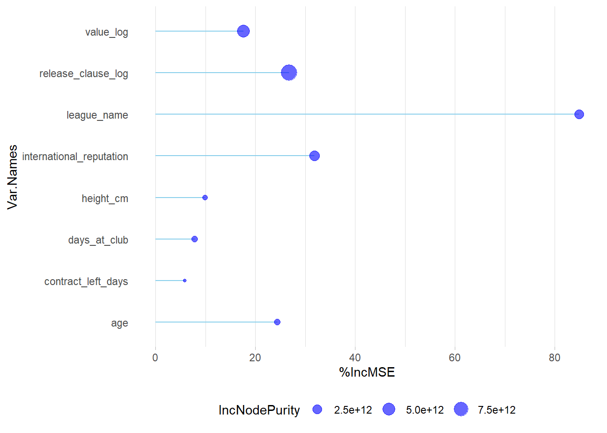
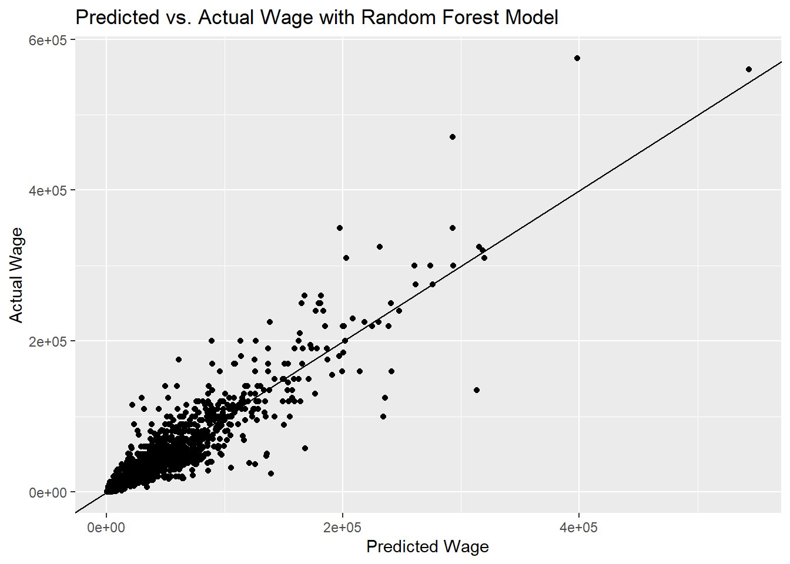

set.seed(101)1 The Dataset

We will be working with FIFA 22 complete player dataset from Kaggle. Our focus will be on modelling the dependence of player’s wage on attributes like age, reputation, etc. and predict the wage of some players on out-of-sample data.
Note
We will be using the FIFA player dataset from the years 2018 till 2022.
1.1 Loading Packages & Reading Data
As the first step, we will set a seed. This will ensure reproducibility of the stochastic processes happening in the analysis (like random sampling).
The library kableExtra by Hao Zhu was used to format the table display in HTML.
Code
install.packages(c('rmarkdown','dplyr', 'tidyverse', 'corrplot', 'randomForest', 'VIM', 'mice', 'kableExtra', 'MASS', 'MLmetrics', 'xgboost', 'fastDummies'), repos = "http://cran.us.r-project.org")package 'rmarkdown' successfully unpacked and MD5 sums checked
package 'dplyr' successfully unpacked and MD5 sums checked
package 'tidyverse' successfully unpacked and MD5 sums checked
package 'corrplot' successfully unpacked and MD5 sums checked
package 'randomForest' successfully unpacked and MD5 sums checked
package 'VIM' successfully unpacked and MD5 sums checked
package 'mice' successfully unpacked and MD5 sums checked
package 'kableExtra' successfully unpacked and MD5 sums checked
package 'MASS' successfully unpacked and MD5 sums checked
package 'MLmetrics' successfully unpacked and MD5 sums checked
package 'xgboost' successfully unpacked and MD5 sums checked
package 'fastDummies' successfully unpacked and MD5 sums checked
The downloaded binary packages are in
C:\Users\user\AppData\Local\Temp\RtmpumR3pA\downloaded_packagesCode
library(dplyr)
library(tidyverse)
library(corrplot)
library(randomForest)
library(VIM)
library(mice)
library(kableExtra)
library(MASS)
library(MLmetrics)
library(xgboost)
library(fastDummies)
get_yearfile <- function (title_year) {
filename <- paste('./data/players_',title_year,'.csv', sep="")
df <- read.csv(filename)
df["fifa_version"] <- title_year
df
}
df_list <- lapply(c(18:22), get_yearfile)
player_df <- df_list %>% reduce(bind_rows)
rm(df_list)
eligible_features <- c('fifa_version', 'value_eur','wage_eur' ,'age',
'height_cm', 'weight_kg', 'league_name',
'club_contract_valid_until', 'club_joined', 'preferred_foot',
'international_reputation',
'work_rate', 'body_type', 'release_clause_eur')
player_df <- player_df[eligible_features]
head(player_df) %>%
kbl() %>%
kable_material(c("striped", "hover"))| fifa_version | value_eur | wage_eur | age | height_cm | weight_kg | league_name | club_contract_valid_until | club_joined | preferred_foot | international_reputation | work_rate | body_type | release_clause_eur |
|---|---|---|---|---|---|---|---|---|---|---|---|---|---|
| 18 | 9.55e+07 | 575000 | 32 | 185 | 80 | Spain Primera Division | 2021 | 2009-07-01 | Right | 5 | High/Low | Unique | 195800000 |
| 18 | 1.05e+08 | 575000 | 30 | 170 | 72 | Spain Primera Division | 2018 | 2004-07-01 | Left | 5 | Medium/Medium | Unique | 215300000 |
| 18 | 6.10e+07 | 225000 | 31 | 193 | 92 | German 1. Bundesliga | 2021 | 2011-07-01 | Right | 5 | Medium/Medium | Normal (185+) | 100700000 |
| 18 | 9.70e+07 | 500000 | 30 | 182 | 86 | Spain Primera Division | 2021 | 2014-07-11 | Right | 5 | High/Medium | Normal (170-185) | 198900000 |
| 18 | 1.23e+08 | 275000 | 25 | 175 | 68 | French Ligue 1 | 2022 | 2017-08-03 | Right | 5 | High/Medium | Unique | 236800000 |
| 18 | 9.20e+07 | 350000 | 28 | 185 | 79 | German 1. Bundesliga | 2021 | 2014-07-01 | Right | 4 | High/Medium | Normal (170-185) | 151800000 |
1.2 Data Cleaning
The dataframe has 92705 rows, comprising players from 57 leagues. We will select the top 7 leagues according to UEFA rankings. The following are the top 7 leagues:
- Premier League | England
- La Liga | Spain
- Serie A | Italy
- Bundesliga | Germany
- Primeira Liga | Portugal
- Ligue 1 | France
- Eredivisie | Netharlands
Code
top_leagues <- c("English Premier League", "Spain Primera Division", "Italian Serie A",
"German 1. Bundesliga", "Portuguese Liga ZON SAGRES", "French Ligue 1",
"Holland Eredivisie")
player_df <- player_df[player_df$league_name %in% top_leagues,]2 Exploratory Data Analysis
2.1 Missing Data Analysis
We can find out the columns which have missing values, with the code snippet below:
miss_cols <- names(which(colSums(is.na(player_df)) > 0))
miss_cols[1] "value_eur" "release_clause_eur"The following columns have missing values: value_eur, release_clause_eur
Let’s check the count of missing values compared to the total number of rows, in each version of FIFA dataset:
player_df %>%
group_by(fifa_version) %>%
dplyr::summarise(release_clause_na = sum(is.na(release_clause_eur)),
value_na = sum(is.na(value_eur)), row_count=n())# A tibble: 5 × 4
fifa_version release_clause_na value_na row_count
<int> <int> <int> <int>
1 18 286 1 3949
2 19 220 1 3959
3 20 203 2 4018
4 21 166 2 4068
5 22 302 0 3973We can visualize the missing values in the following plot:
aggr_plot <- aggr(player_df, col=c('#0099ff','#ff6699'), numbers=TRUE, sortVars=TRUE,
labels=names(player_df), cex.axis=.5, gap=3,
ylab=c("Histogram of missing data","Pattern"))
We will now impute the missing values using the mice package in R
imputed_data <- mice(player_df,m=3,maxit=10,meth='cart',seed=500)Let’s compare the distribution of imputed data and the original data:
densityplot(imputed_data)
Figure 3 shows the distribution of imputed data (red) over the distribution of the original data (blue). We see that they follow similar distributions. So, the imputation of our missing values hasn’t adversely affected our data distribution.
So we replace the missing values with the imputed values:
player_df <- complete(imputed_data, 1)3 Feature Engineering
3.1 Creating New Features
Based on the FIFA version, club_joined date and club_contract_valid_until date, we can create the following 2 features: contract_left_days and days_at_club
Code
player_df$fifa_version <- paste('20', player_df$fifa_version, sep="")
player_df$fifa_version <- as.Date(ISOdate(player_df$fifa_version, 1, 1))
player_df <- player_df[player_df$club_joined!="",] # since some blank values were found
player_df$club_joined <- as.Date(ISOdate(player_df$club_joined, 1, 1))
player_df$club_contract_valid_until <- as.Date(ISOdate(player_df$club_contract_valid_until, 1, 1))
player_df$contract_left_days <- as.numeric(player_df$club_contract_valid_until - player_df$fifa_version)
player_df$days_at_club <- as.numeric(player_df$fifa_version - player_df$club_joined)
head(player_df[,c("fifa_version", "club_joined", "club_contract_valid_until", "contract_left_days", "days_at_club")]) %>%
kbl() %>%
kable_material(c("striped", "hover"))| fifa_version | club_joined | club_contract_valid_until | contract_left_days | days_at_club |
|---|---|---|---|---|
| 2018-01-01 | 2009-07-01 | 2021-01-01 | 1096 | 3106 |
| 2018-01-01 | 2004-07-01 | 2018-01-01 | 0 | 4932 |
| 2018-01-01 | 2011-07-01 | 2021-01-01 | 1096 | 2376 |
| 2018-01-01 | 2014-07-11 | 2021-01-01 | 1096 | 1270 |
| 2018-01-01 | 2017-08-03 | 2022-01-01 | 1461 | 151 |
| 2018-01-01 | 2014-07-01 | 2021-01-01 | 1096 | 1280 |
Code
player_df <- subset(player_df, select = -c(fifa_version, club_contract_valid_until, club_joined))3.2 Transforming Features
The features: body_type and work_rate have string values with mixed types. That can be formatted to generate cleaner categories:
player_df$work_rate <- str_extract(player_df$work_rate, "\\w+")
player_df$body_type <- str_extract(player_df$body_type, "\\w+")The features of the data have the following types now:
Code
str(player_df)'data.frame': 18796 obs. of 13 variables:
$ value_eur : num 9.55e+07 1.05e+08 6.10e+07 9.70e+07 1.23e+08 9.20e+07 5.20e+07 7.70e+07 7.90e+07 9.05e+07 ...
$ wage_eur : num 575000 575000 225000 500000 275000 350000 300000 275000 325000 300000 ...
$ age : int 32 30 31 30 25 28 31 29 27 26 ...
$ height_cm : int 185 170 193 182 175 185 183 184 182 173 ...
$ weight_kg : int 80 72 92 86 68 79 75 87 78 76 ...
$ league_name : chr "Spain Primera Division" "Spain Primera Division" "German 1. Bundesliga" "Spain Primera Division" ...
$ preferred_foot : chr "Right" "Left" "Right" "Right" ...
$ international_reputation: int 5 5 5 5 5 4 4 4 4 4 ...
$ work_rate : chr "High" "Medium" "Medium" "High" ...
$ body_type : chr "Unique" "Unique" "Normal" "Normal" ...
$ release_clause_eur : num 1.96e+08 2.15e+08 1.01e+08 1.99e+08 2.37e+08 ...
$ contract_left_days : num 1096 0 1096 1096 1461 ...
$ days_at_club : num 3106 4932 2376 1270 151 ...The features: league_name, preferred_foot, work_rate, body_type and international_reputation can be converted to categorical type to facilitate model fitting.
Code
player_df$league_name <- as.factor(player_df$league_name)
player_df$preferred_foot <- as.factor(player_df$preferred_foot)
player_df$work_rate <- as.factor(player_df$work_rate)
player_df$body_type <- as.factor(player_df$body_type)
player_df$international_reputation <- as.factor(player_df$international_reputation)3.3 Train-Test Split
Now the data is ready for splitting into training (including validation) and testing datasets. The test dataset will be utilized later, after designing the models, for predicting the wage on out-of-sample data.
We will select 80% of the data for training, and keep 20% as unseen data for prediction.
Code
sample <- sample.int(n = nrow(player_df), size = floor(.80*nrow(player_df)), replace = F)
train <- player_df[sample, ]
test <- player_df[-sample, ]
player_df <- train # renaming the dataframe4 Fitting Regression Models
Now we will model the dependence of Wage on other covariates. The models will be used to make prediction on the unseen data later.
4.1 Linear Model
model.lm1 <- lm(wage_eur ~ ., data=player_df)
model.lm1.summ <- summary(model.lm1)
model.lm1.summ
Call:
lm(formula = wage_eur ~ ., data = player_df)
Residuals:
Min 1Q Median 3Q Max
-245650 -5724 245 4662 239997
Coefficients:
Estimate Std. Error t value Pr(>|t|)
(Intercept) 3.358e+04 5.074e+03 6.618 3.76e-11
value_eur 6.064e-04 5.247e-05 11.558 < 2e-16
age 8.992e+02 4.068e+01 22.106 < 2e-16
height_cm -2.098e+02 3.783e+01 -5.545 2.99e-08
weight_kg 8.909e+01 3.729e+01 2.389 0.01691
league_nameFrench Ligue 1 -2.036e+04 5.156e+02 -39.482 < 2e-16
league_nameGerman 1. Bundesliga -1.924e+04 5.262e+02 -36.563 < 2e-16
league_nameHolland Eredivisie -2.437e+04 5.734e+02 -42.501 < 2e-16
league_nameItalian Serie A -1.546e+04 5.243e+02 -29.490 < 2e-16
league_namePortuguese Liga ZON SAGRES -2.914e+04 5.580e+02 -52.228 < 2e-16
league_nameSpain Primera Division -1.959e+04 5.148e+02 -38.061 < 2e-16
preferred_footRight 9.119e+01 3.310e+02 0.275 0.78296
international_reputation2 7.478e+03 4.528e+02 16.515 < 2e-16
international_reputation3 2.394e+04 7.522e+02 31.824 < 2e-16
international_reputation4 8.325e+04 1.555e+03 53.552 < 2e-16
international_reputation5 1.511e+05 3.942e+03 38.330 < 2e-16
work_rateLow -7.862e+02 7.879e+02 -0.998 0.31837
work_rateMedium -1.011e+03 3.361e+02 -3.009 0.00263
body_typeNormal -2.519e+02 3.325e+02 -0.758 0.44872
body_typeStocky -9.086e+02 7.346e+02 -1.237 0.21616
body_typeUnique -6.258e+03 1.489e+03 -4.204 2.64e-05
release_clause_eur 6.297e-04 2.981e-05 21.122 < 2e-16
contract_left_days 3.008e+00 3.665e-01 8.206 2.47e-16
days_at_club 1.964e+00 1.984e-01 9.895 < 2e-16
(Intercept) ***
value_eur ***
age ***
height_cm ***
weight_kg *
league_nameFrench Ligue 1 ***
league_nameGerman 1. Bundesliga ***
league_nameHolland Eredivisie ***
league_nameItalian Serie A ***
league_namePortuguese Liga ZON SAGRES ***
league_nameSpain Primera Division ***
preferred_footRight
international_reputation2 ***
international_reputation3 ***
international_reputation4 ***
international_reputation5 ***
work_rateLow
work_rateMedium **
body_typeNormal
body_typeStocky
body_typeUnique ***
release_clause_eur ***
contract_left_days ***
days_at_club ***
---
Signif. codes: 0 '***' 0.001 '**' 0.01 '*' 0.05 '.' 0.1 ' ' 1
Residual standard error: 17620 on 15012 degrees of freedom
Multiple R-squared: 0.7947, Adjusted R-squared: 0.7944
F-statistic: 2527 on 23 and 15012 DF, p-value: < 2.2e-16We see that the features: weight_kg, preferred_foot, work_rate and body_type have low signficance in modelling the wage.
So, let’s try a linear model without these factors:
model.lm2 <- lm(wage_eur ~ value_eur + age + height_cm + league_name +
international_reputation + release_clause_eur +
contract_left_days + days_at_club, data = player_df)
model.lm2.summ <- summary(model.lm2)
model.lm2.summ
Call:
lm(formula = wage_eur ~ value_eur + age + height_cm + league_name +
international_reputation + release_clause_eur + contract_left_days +
days_at_club, data = player_df)
Residuals:
Min 1Q Median 3Q Max
-247655 -5686 213 4625 239475
Coefficients:
Estimate Std. Error t value Pr(>|t|)
(Intercept) 2.941e+04 4.055e+03 7.252 4.32e-13
value_eur 5.426e-04 4.995e-05 10.862 < 2e-16
age 9.239e+02 3.947e+01 23.406 < 2e-16
height_cm -1.581e+02 2.214e+01 -7.139 9.85e-13
league_nameFrench Ligue 1 -2.039e+04 5.153e+02 -39.562 < 2e-16
league_nameGerman 1. Bundesliga -1.910e+04 5.239e+02 -36.456 < 2e-16
league_nameHolland Eredivisie -2.446e+04 5.697e+02 -42.932 < 2e-16
league_nameItalian Serie A -1.543e+04 5.237e+02 -29.473 < 2e-16
league_namePortuguese Liga ZON SAGRES -2.924e+04 5.555e+02 -52.645 < 2e-16
league_nameSpain Primera Division -1.969e+04 5.131e+02 -38.381 < 2e-16
international_reputation2 7.662e+03 4.517e+02 16.962 < 2e-16
international_reputation3 2.388e+04 7.520e+02 31.756 < 2e-16
international_reputation4 8.285e+04 1.551e+03 53.404 < 2e-16
international_reputation5 1.484e+05 3.881e+03 38.237 < 2e-16
release_clause_eur 6.558e-04 2.927e-05 22.404 < 2e-16
contract_left_days 3.194e+00 3.651e-01 8.747 < 2e-16
days_at_club 1.969e+00 1.984e-01 9.922 < 2e-16
(Intercept) ***
value_eur ***
age ***
height_cm ***
league_nameFrench Ligue 1 ***
league_nameGerman 1. Bundesliga ***
league_nameHolland Eredivisie ***
league_nameItalian Serie A ***
league_namePortuguese Liga ZON SAGRES ***
league_nameSpain Primera Division ***
international_reputation2 ***
international_reputation3 ***
international_reputation4 ***
international_reputation5 ***
release_clause_eur ***
contract_left_days ***
days_at_club ***
---
Signif. codes: 0 '***' 0.001 '**' 0.01 '*' 0.05 '.' 0.1 ' ' 1
Residual standard error: 17640 on 15019 degrees of freedom
Multiple R-squared: 0.7943, Adjusted R-squared: 0.7941
F-statistic: 3624 on 16 and 15019 DF, p-value: < 2.2e-16We see that the F-statistic has improved from 2527 to 3624, while Adjusted R-squared reduced from 0.7944 to 0.7941.
We see that the F-statistic has improved substantially, without much reduction in Adjusted R-squared value. So the model got better.
4.2 Generalized Linear Models
Since we are working with currency data (wage, value and release_clause), we cannot assume a normal distribution of the covariates (since they are non-negative and dense at low values). Let us plot the univariate distributions:


We can see that the currency variables (wage_eur, value_eur and release_clause_eur) are highly positively skewed, and far from normally distributed. Thus we should view them in a log-scale. The distribution after log transformation are shown below:
4.2.1 Log transformed variables
player_df$wage_log <- log(player_df$wage_eur)
player_df$value_log <- log(player_df$value_eur)
player_df$release_clause_log <- log(player_df$release_clause_eur)
We can see that the positive skewness has been damped, and the log transformed variables are approximately gaussian.
4.2.2 Gamma Distributed Response
If we log-transform the response variable (Wage), we will no longer be able to compare the model to the previous linear models where non-transformed Wage was used. It will also introduce extra bias due to nonlinear back-transformation with exponential function. Thus, we will keep the response variable in the original form, and rather fit a GLM with a family corresponding to its distribution.
Code
k_wage <- player_df$wage_eur/1000
ggplot(player_df, aes(x=k_wage)) +
stat_density(colour="#ff6699", geom="line", position="identity", size=1) +
stat_function(color="#0099ff", fun=dgamma, args=list(shape=mean(k_wage)^2 / sd(k_wage)^2, scale=sd(k_wage)^2 / mean(k_wage)), size=1) +
labs(title="Gamma distribution of Wage",
x ="Wage (in 1000 Eur)", y = "Density")Warning: Using `size` aesthetic for lines was deprecated in ggplot2 3.4.0.
ℹ Please use `linewidth` instead.
Thus, we will fit a GLM with Gamma family, and with a log-link.
Code
model.glm1 <- glm(wage_eur ~ value_log + age + height_cm + league_name +
international_reputation + release_clause_log +
contract_left_days + days_at_club, data = player_df,
family = Gamma(link="log"))
model.glm1
Call: glm(formula = wage_eur ~ value_log + age + height_cm + league_name +
international_reputation + release_clause_log + contract_left_days +
days_at_club, family = Gamma(link = "log"), data = player_df)
Coefficients:
(Intercept) value_log
2.653e-01 2.161e-01
age height_cm
6.967e-02 -4.365e-03
league_nameFrench Ligue 1 league_nameGerman 1. Bundesliga
-6.132e-01 -5.229e-01
league_nameHolland Eredivisie league_nameItalian Serie A
-1.239e+00 -4.113e-01
league_namePortuguese Liga ZON SAGRES league_nameSpain Primera Division
-1.484e+00 -6.742e-01
international_reputation2 international_reputation3
3.867e-02 1.404e-01
international_reputation4 international_reputation5
4.545e-01 6.118e-01
release_clause_log contract_left_days
3.651e-01 6.394e-05
days_at_club
4.784e-05
Degrees of Freedom: 15035 Total (i.e. Null); 15019 Residual
Null Deviance: 22430
Residual Deviance: 2562 AIC: 300900If we compare the AIC of the GLM with the previous Linear Model, we see:
- AIC of GLM (with Gamma family and log link) : 300907
- AIC of Linear Model 2 : 336730.2
Thus, the GLM has given a better result (lower AIC).
4.2.3 AIC-based step function for variable selection
We can see if the variables we initially omitted after linear model, may be added to the GLM, to reduce the AIC even further. We will start off with only value_log as predictor, and keep adding / removing covariates that reduce AIC.
Code
model.glm1.step <- step(glm(wage_eur ~ value_log, data=player_df, family = Gamma(link="log")),
scope = wage_eur ~ value_log + age + weight_kg + height_cm +
days_at_club + contract_left_days + preferred_foot +
international_reputation + work_rate + body_type + release_clause_log +
league_name,
direction = "both") Start: AIC=317023.6
wage_eur ~ value_log
Df Deviance AIC
+ league_name 6 4142.2 311766
+ age 1 5725.2 314546
+ international_reputation 4 6394.8 315733
+ days_at_club 1 6710.5 316284
+ contract_left_days 1 6912.4 316639
+ weight_kg 1 6977.4 316754
+ release_clause_log 1 7010.9 316813
+ height_cm 1 7096.9 316965
+ body_type 3 7113.1 316997
+ work_rate 2 7116.4 317001
+ preferred_foot 1 7129.4 317022
<none> 7131.5 317024
- value_log 1 22426.9 343985
Step: AIC=308375.2
wage_eur ~ value_log + league_name
Df Deviance AIC
+ age 1 2712.7 303756
+ international_reputation 4 3692.8 306930
+ contract_left_days 1 3927.5 307683
+ days_at_club 1 3943.1 307734
+ weight_kg 1 4061.6 308117
+ body_type 3 4103.2 308255
+ release_clause_log 1 4132.4 308345
+ height_cm 1 4134.2 308351
+ work_rate 2 4136.2 308360
+ preferred_foot 1 4141.1 308374
<none> 4142.2 308375
- league_name 6 7131.5 318027
- value_log 1 14989.6 343442
Step: AIC=301775.6
wage_eur ~ value_log + league_name + age
Df Deviance AIC
+ release_clause_log 1 2651.0 301468
+ international_reputation 4 2655.9 301498
+ days_at_club 1 2692.9 301678
+ height_cm 1 2700.6 301717
+ weight_kg 1 2707.9 301754
+ work_rate 2 2707.9 301755
+ body_type 3 2707.6 301756
+ contract_left_days 1 2710.0 301764
+ preferred_foot 1 2712.0 301774
<none> 2712.7 301776
- age 1 4142.2 308954
- league_name 6 5725.2 316895
- value_log 1 12195.5 349404
Step: AIC=301421.4
wage_eur ~ value_log + league_name + age + release_clause_log
Df Deviance AIC
+ international_reputation 4 2593.8 301136
+ days_at_club 1 2628.2 301307
+ height_cm 1 2639.9 301367
+ body_type 3 2643.6 301389
+ work_rate 2 2646.0 301400
+ weight_kg 1 2646.9 301402
+ contract_left_days 1 2649.7 301417
+ preferred_foot 1 2650.1 301419
<none> 2651.0 301421
- value_log 1 2681.4 301576
- release_clause_log 1 2712.7 301736
- age 1 4132.4 309023
- league_name 6 5485.3 315957
Step: AIC=301092.2
wage_eur ~ value_log + league_name + age + release_clause_log +
international_reputation
Df Deviance AIC
+ days_at_club 1 2581.1 301026
+ height_cm 1 2582.9 301036
+ weight_kg 1 2589.2 301069
+ work_rate 2 2589.1 301071
+ contract_left_days 1 2591.1 301080
+ body_type 3 2591.5 301086
+ preferred_foot 1 2593.0 301090
<none> 2593.8 301092
- value_log 1 2618.9 301224
- international_reputation 4 2651.0 301389
- release_clause_log 1 2655.9 301421
- age 1 3674.9 306858
- league_name 6 5331.1 315685
Step: AIC=301017.8
wage_eur ~ value_log + league_name + age + release_clause_log +
international_reputation + days_at_club
Df Deviance AIC
+ height_cm 1 2570.5 300963
+ contract_left_days 1 2573.7 300980
+ work_rate 2 2575.6 300993
+ weight_kg 1 2576.7 300996
+ body_type 3 2578.8 301012
+ preferred_foot 1 2580.1 301015
<none> 2581.1 301018
- days_at_club 1 2593.8 301084
- value_log 1 2604.4 301141
- international_reputation 4 2628.2 301263
- release_clause_log 1 2645.4 301361
- age 1 3577.6 306368
- league_name 6 5221.2 315186
Step: AIC=300956.3
wage_eur ~ value_log + league_name + age + release_clause_log +
international_reputation + days_at_club + height_cm
Df Deviance AIC
+ contract_left_days 1 2562.0 300912
+ work_rate 2 2568.2 300948
+ body_type 3 2568.3 300951
+ preferred_foot 1 2570.0 300956
+ weight_kg 1 2570.0 300956
<none> 2570.5 300956
- height_cm 1 2581.1 301011
- days_at_club 1 2582.9 301021
- value_log 1 2594.3 301083
- international_reputation 4 2617.6 301202
- release_clause_log 1 2633.7 301295
- age 1 3575.0 306366
- league_name 6 5221.2 315226
Step: AIC=300907
wage_eur ~ value_log + league_name + age + release_clause_log +
international_reputation + days_at_club + height_cm + contract_left_days
Df Deviance AIC
+ work_rate 2 2559.9 300900
+ body_type 3 2559.7 300901
+ preferred_foot 1 2561.5 300907
+ weight_kg 1 2561.6 300907
<none> 2562.0 300907
- contract_left_days 1 2570.5 300951
- height_cm 1 2573.7 300969
- days_at_club 1 2579.4 300999
- value_log 1 2585.2 301031
- international_reputation 4 2610.0 301159
- release_clause_log 1 2622.4 301232
- age 1 3515.4 306058
- league_name 6 5205.3 315181
Step: AIC=300898.4
wage_eur ~ value_log + league_name + age + release_clause_log +
international_reputation + days_at_club + height_cm + contract_left_days +
work_rate
Df Deviance AIC
+ body_type 3 2557.7 300893
+ weight_kg 1 2559.4 300898
<none> 2559.9 300898
+ preferred_foot 1 2559.5 300899
- work_rate 2 2562.0 300906
- contract_left_days 1 2568.2 300942
- height_cm 1 2568.3 300942
- days_at_club 1 2577.9 300994
- value_log 1 2582.5 301019
- international_reputation 4 2607.6 301149
- release_clause_log 1 2620.6 301225
- age 1 3510.4 306039
- league_name 6 5190.7 315121
Step: AIC=300891.3
wage_eur ~ value_log + league_name + age + release_clause_log +
international_reputation + days_at_club + height_cm + contract_left_days +
work_rate + body_type
Df Deviance AIC
+ weight_kg 1 2556.3 300886
<none> 2557.7 300891
+ preferred_foot 1 2557.4 300892
- body_type 3 2559.9 300897
- work_rate 2 2559.7 300898
- contract_left_days 1 2566.1 300935
- height_cm 1 2566.1 300935
- days_at_club 1 2575.7 300987
- value_log 1 2580.3 301011
- international_reputation 4 2601.4 301120
- release_clause_log 1 2617.5 301213
- age 1 3495.2 305970
- league_name 6 5155.1 314957
Step: AIC=300885
wage_eur ~ value_log + league_name + age + release_clause_log +
international_reputation + days_at_club + height_cm + contract_left_days +
work_rate + body_type + weight_kg
Df Deviance AIC
<none> 2556.3 300885
+ preferred_foot 1 2556.0 300885
- weight_kg 1 2557.7 300890
- work_rate 2 2558.4 300892
- body_type 3 2559.4 300896
- height_cm 1 2563.6 300923
- contract_left_days 1 2564.7 300928
- days_at_club 1 2574.3 300981
- value_log 1 2578.7 301005
- international_reputation 4 2599.3 301110
- release_clause_log 1 2616.3 301208
- age 1 3457.1 305770
- league_name 6 5132.2 314847In the final model, only preferred_foot is the omitted variable. We include all other features in the GLM. Thus we form the next GLM:
Code
model.glm2 <- glm(wage_eur ~ value_log + age + height_cm + league_name +
international_reputation + release_clause_log +
contract_left_days + days_at_club + weight_kg +
work_rate + body_type, data = player_df,
family = Gamma(link="log"))
model.glm2
Call: glm(formula = wage_eur ~ value_log + age + height_cm + league_name +
international_reputation + release_clause_log + contract_left_days +
days_at_club + weight_kg + work_rate + body_type, family = Gamma(link = "log"),
data = player_df)
Coefficients:
(Intercept) value_log
4.161e-01 2.137e-01
age height_cm
6.968e-02 -5.831e-03
league_nameFrench Ligue 1 league_nameGerman 1. Bundesliga
-6.110e-01 -5.223e-01
league_nameHolland Eredivisie league_nameItalian Serie A
-1.232e+00 -4.096e-01
league_namePortuguese Liga ZON SAGRES league_nameSpain Primera Division
-1.477e+00 -6.686e-01
international_reputation2 international_reputation3
3.760e-02 1.412e-01
international_reputation4 international_reputation5
4.504e-01 6.046e-01
release_clause_log contract_left_days
3.651e-01 6.326e-05
days_at_club weight_kg
4.859e-05 2.469e-03
work_rateLow work_rateMedium
-4.343e-02 -2.540e-02
body_typeNormal body_typeStocky
-3.286e-02 -1.957e-02
body_typeUnique
-2.678e-02
Degrees of Freedom: 15035 Total (i.e. Null); 15013 Residual
Null Deviance: 22430
Residual Deviance: 2556 AIC: 3009004.3 Random Forest Model
In the next stage, we will try to fit a random forest regression model for Wage analysis. The code is as follows:
model.rf1 <- randomForest(wage_eur ~ value_log + age + height_cm + league_name +
international_reputation + release_clause_log +
contract_left_days + days_at_club, data=player_df, ntree=100,
keep.forest=TRUE, importance=TRUE)
model.rf1
Call:
randomForest(formula = wage_eur ~ value_log + age + height_cm + league_name + international_reputation + release_clause_log + contract_left_days + days_at_club, data = player_df, ntree = 100, keep.forest = TRUE, importance = TRUE)
Type of random forest: regression
Number of trees: 100
No. of variables tried at each split: 2
Mean of squared residuals: 199624051
% Var explained: 86.794.3.1 Hyperparameter Optimization of Random Forest Model
One main hyperparameter we can tune in the Random Forest Model is mtry: the number of variables to randomly sample as candidates at each split. By default, it is set as p/3 where p is the number of features used in the model.
The best value of mtry can be found by finding the mtry corresponding to the minimum of OOB Error, using the code below:
bestmtry <- tuneRF(player_df,player_df$wage_eur,stepFactor = 1.2,
improve = 0.01, trace=T, plot= T)mtry = 5 OOB error = 3196052
Searching left ...
Searching right ...
mtry = 6 OOB error = 1781462
0.4426054 0.01
mtry = 7 OOB error = 1596746
0.1036878 0.01
mtry = 8 OOB error = 1510160
0.05422675 0.01
mtry = 9 OOB error = 2068916
-0.3699981 0.01 
We see that best mtry value is 8. Using that in the improved Random Forest model:
model.rf2 <- randomForest(wage_eur ~ value_log + age + height_cm + league_name +
international_reputation + release_clause_log +
contract_left_days + days_at_club, data=player_df, ntree=100,
mtry=8, keep.forest=TRUE, importance=TRUE)
model.rf2
Call:
randomForest(formula = wage_eur ~ value_log + age + height_cm + league_name + international_reputation + release_clause_log + contract_left_days + days_at_club, data = player_df, ntree = 100, mtry = 8, keep.forest = TRUE, importance = TRUE)
Type of random forest: regression
Number of trees: 100
No. of variables tried at each split: 8
Mean of squared residuals: 198204509
% Var explained: 86.884.3.2 Visualizing variable importance
The importance of variables used in the random forest model is visualized below:
Code
ImpData <- as.data.frame(importance(model.rf2))
ImpData$Var.Names <- row.names(ImpData)
ggplot(ImpData, aes(x=Var.Names, y=`%IncMSE`)) +
geom_segment( aes(x=Var.Names, xend=Var.Names, y=0, yend=`%IncMSE`), color="skyblue") +
geom_point(aes(size = IncNodePurity), color="blue", alpha=0.6) +
theme_light() +
coord_flip() +
theme(
legend.position="bottom",
panel.grid.major.y = element_blank(),
panel.border = element_blank(),
axis.ticks.y = element_blank()
)
Here we see 2 different metrics for assessing Variable Importance:
- %IncMSE : Increase in MSE of predictions when the variable is permuted
- IncNodePurity : Average increase in node purity on splitting using the variable
%IncMSE is the more relevant metric, and we see that league_name plays most important role in the wage : permutations (shuffling) of the league_name can result in highest changes of Wage. That is followed by the international_reputation.
4.4 XGBoost Model
Next we use XGBoost (eXtreme Gradient Boosting) algorithm to design a model for Wage prediction. We will tune the parameters: max.depth and nrounds of the gradient boosting algorithm using grid search, and evaluating MAPE on a validation dataset. The model with best parameter choices are selected for evaluating on the test set later.
We convert the categorical variables to dummy variables since the XGBoost model requires a data matrix with numerical features. This is achieved with the following code:
dummy_player_df <- dummy_cols(player_df, select_columns = c('league_name', 'international_reputation', 'work_rate', 'body_type', 'preferred_foot'),
remove_selected_columns = TRUE)Now we keep aside a portion of the data for validation, and generate data matrices for XGBoost:
Code
sample <- sample.int(n = nrow(dummy_player_df), size = floor(.80*nrow(dummy_player_df)), replace = F)
train_xgb <- dummy_player_df[sample, ]
val_xgb <- dummy_player_df[-sample, ]
train_xgb_x <- data.matrix(train_xgb[, -which(names(train_xgb) %in% c('value_eur', 'wage_eur', 'wage_log', 'release_clause_eur'))])
train_xgb_y <- train_xgb$wage_eur
val_xgb_x <- data.matrix(val_xgb[, -which(names(val_xgb) %in% c('value_eur', 'wage_eur', 'wage_log', 'release_clause_eur'))])
val_xgb_y <- val_xgb$wage_eur
xgb_train = xgb.DMatrix(data = train_xgb_x, label = train_xgb_y)
xgb_val = xgb.DMatrix(data = val_xgb_x, label = val_xgb_y)To tune the max.depth and nrounds parameters of thr XGBoost model, we create a function: grid_search_xgb_val to display the MAPE for a particular (max.depth, nrounds) input:
grid_search_xgb_val <- function(depth, rounds){
model_xgboost = xgboost(data = xgb_train, max.depth = depth, nrounds = rounds, verbose = 0)
pred_y = predict(model_xgboost, xgb_val)
cat(sprintf("Depth:%d Rounds:%d MAPE:%f\n", depth, rounds, MAPE(pred_y, val_xgb_y)*100))
return(list("depth" = depth, "rounds" = rounds, "mape" = MAPE(pred_y, val_xgb_y)*100))
}Performing grid search with various values of max.depth and nrounds:
opt_depth <- 4
opt_rounds <- 40
min_mape <- 1000
for (depth in seq(3,12,by=1)) {
for (rounds in seq(40,160, by=20)) {
result <- grid_search_xgb_val(depth,rounds)
if(result$mape < min_mape) {
min_mape <- result$mape
opt_depth <- result$depth
opt_rounds <- result$rounds
cat(sprintf("New record:-- Depth:%d Rounds:%d MAPE:%f\n", opt_depth, opt_rounds, min_mape))
}
}
}Depth:3 Rounds:40 MAPE:42.309333
New record:-- Depth:3 Rounds:40 MAPE:42.309333
Depth:3 Rounds:60 MAPE:42.222445
New record:-- Depth:3 Rounds:60 MAPE:42.222445
Depth:3 Rounds:80 MAPE:41.666486
New record:-- Depth:3 Rounds:80 MAPE:41.666486
Depth:3 Rounds:100 MAPE:41.813389
Depth:3 Rounds:120 MAPE:41.084658
New record:-- Depth:3 Rounds:120 MAPE:41.084658
Depth:3 Rounds:140 MAPE:40.590522
New record:-- Depth:3 Rounds:140 MAPE:40.590522
Depth:3 Rounds:160 MAPE:40.268984
New record:-- Depth:3 Rounds:160 MAPE:40.268984
Depth:4 Rounds:40 MAPE:36.439804
New record:-- Depth:4 Rounds:40 MAPE:36.439804
Depth:4 Rounds:60 MAPE:35.141178
New record:-- Depth:4 Rounds:60 MAPE:35.141178
Depth:4 Rounds:80 MAPE:34.870408
New record:-- Depth:4 Rounds:80 MAPE:34.870408
Depth:4 Rounds:100 MAPE:34.589336
New record:-- Depth:4 Rounds:100 MAPE:34.589336
Depth:4 Rounds:120 MAPE:34.621300
Depth:4 Rounds:140 MAPE:34.695299
Depth:4 Rounds:160 MAPE:34.750275
Depth:5 Rounds:40 MAPE:34.996525
Depth:5 Rounds:60 MAPE:34.714891
Depth:5 Rounds:80 MAPE:34.891669
Depth:5 Rounds:100 MAPE:35.334966
Depth:5 Rounds:120 MAPE:35.276264
Depth:5 Rounds:140 MAPE:35.583056
Depth:5 Rounds:160 MAPE:35.772319
Depth:6 Rounds:40 MAPE:34.975921
Depth:6 Rounds:60 MAPE:34.551006
New record:-- Depth:6 Rounds:60 MAPE:34.551006
Depth:6 Rounds:80 MAPE:34.760077
Depth:6 Rounds:100 MAPE:34.986647
Depth:6 Rounds:120 MAPE:35.018111
Depth:6 Rounds:140 MAPE:35.193605
Depth:6 Rounds:160 MAPE:35.321599
Depth:7 Rounds:40 MAPE:34.530259
New record:-- Depth:7 Rounds:40 MAPE:34.530259
Depth:7 Rounds:60 MAPE:34.643383
Depth:7 Rounds:80 MAPE:35.062626
Depth:7 Rounds:100 MAPE:35.420850
Depth:7 Rounds:120 MAPE:35.901167
Depth:7 Rounds:140 MAPE:36.114789
Depth:7 Rounds:160 MAPE:36.265276
Depth:8 Rounds:40 MAPE:34.620141
Depth:8 Rounds:60 MAPE:34.850971
Depth:8 Rounds:80 MAPE:35.349112
Depth:8 Rounds:100 MAPE:35.902885
Depth:8 Rounds:120 MAPE:36.182229
Depth:8 Rounds:140 MAPE:36.627765
Depth:8 Rounds:160 MAPE:36.831777
Depth:9 Rounds:40 MAPE:34.143638
New record:-- Depth:9 Rounds:40 MAPE:34.143638
Depth:9 Rounds:60 MAPE:34.474756
Depth:9 Rounds:80 MAPE:35.609511
Depth:9 Rounds:100 MAPE:36.431981
Depth:9 Rounds:120 MAPE:36.886884
Depth:9 Rounds:140 MAPE:37.297243
Depth:9 Rounds:160 MAPE:37.520472
Depth:10 Rounds:40 MAPE:34.737650
Depth:10 Rounds:60 MAPE:35.164351
Depth:10 Rounds:80 MAPE:35.574821
Depth:10 Rounds:100 MAPE:35.966919
Depth:10 Rounds:120 MAPE:36.110516
Depth:10 Rounds:140 MAPE:36.428465
Depth:10 Rounds:160 MAPE:36.472436
Depth:11 Rounds:40 MAPE:35.098951
Depth:11 Rounds:60 MAPE:35.619548
Depth:11 Rounds:80 MAPE:35.867179
Depth:11 Rounds:100 MAPE:36.144776
Depth:11 Rounds:120 MAPE:36.403334
Depth:11 Rounds:140 MAPE:36.581303
Depth:11 Rounds:160 MAPE:36.662512
Depth:12 Rounds:40 MAPE:35.783781
Depth:12 Rounds:60 MAPE:36.057344
Depth:12 Rounds:80 MAPE:36.212657
Depth:12 Rounds:100 MAPE:36.261438
Depth:12 Rounds:120 MAPE:36.311256
Depth:12 Rounds:140 MAPE:36.330095
Depth:12 Rounds:160 MAPE:36.375912From the console output, we see that the minimum MAPE (34.1436382) is obtained for max.depth = 9 and nrounds = 40. Thus, we will create an XGBoost model with those hyperparameters:
model.xgboost = xgboost(data = xgb_train, max.depth = opt_depth, nrounds = opt_rounds, verbose = 0)5 Wage Prediction
Using the models we have created, we will predict the Wage on unseen data (unseen during model fitting), and compare MAPE: The Mean Absolute Percentage Error.
Code
test$wage_log <- log(test$wage_eur)
test$value_log <- log(test$value_eur)
test$release_clause_log <- log(test$release_clause_eur)5.1 Baseline Model Prediction
To get a minimum performance (baseline) for wage prediction, we can use the mean wage from training dataset, and use that as prediction in the test data.
Mean wage from training data :26970.73. We can calculate the MAPE using the following code:
MAPE(mean(player_df$wage_eur), test$wage_eur)*100[1] 421.7984Thus, the baseline MAPE is 421.798. Any model we propose should have MAPE less than this, to be considered useful.
5.2 Linear Models Prediction
Using the first linear model (where we used all covariates), we obtain the following MAPE:
MAPE(predict(model.lm1, test), test$wage_eur)*100[1] 93.49752Using the second linear model (with only significant features selected), we obtain the following MAPE:
MAPE(predict(model.lm2, test), test$wage_eur)*100[1] 93.25372We see that both linear models have more than 80% MAPE. That is not a very good performance.
5.3 Generalized Linear Models Prediction
Using the first glm (without AIC-based feature selection), we get the following MAPE:
MAPE(predict(model.glm1, test, type = "response"), test$wage_eur)*100[1] 39.50448Using the second glm (with AIC-based feature selection), we get the following MAPE:
MAPE(predict(model.glm2, test, type = "response"), test$wage_eur)*100[1] 39.5349We see a drastic improvement in performance using the GLM model, since it used Gamma distribution to model the Wage, with a log-link. This indeed helped in improving the model.
5.4 Random Forest Model Prediction
Using the first random forest model (without hyperparameter optimization), we get the following MAPE:
MAPE(predict(model.rf1, test), test$wage_eur)*100[1] 38.32406Using the random forest model after hyperparameter optimization, we get the following MAPE:
MAPE(predict(model.rf2, test), test$wage_eur)*100[1] 35.452575.5 XGBoost Model Prediction
We create dummy variables for categorical features in the test dataset, to be able to use the XGBoost model.
Code
dummy_test <- dummy_cols(test, select_columns = c('league_name', 'international_reputation', 'work_rate', 'body_type', 'preferred_foot'),
remove_selected_columns = TRUE)
test_x <- data.matrix(dummy_test[, -which(names(dummy_test) %in% c('value_eur', 'wage_eur', 'wage_log', 'release_clause_eur'))])
test_y <- test$wage_eur
xgb_test = xgb.DMatrix(data = test_x, label = test_y)Using the XGBoost model for wage prediction, we get the following MAPE:
MAPE(predict(model.xgboost, xgb_test), test$wage_eur)*100[1] 36.548855.6 Conclusion
Out of all the models we evaluated on the test set; the Random Forest model (after hyperparameter tuning) gave the best MAPE result. The scatter-plot of predicted wage v/s actual wage on unseen data is as shown below:
Code
ggplot(test, aes(x=predict(model.rf2, test), y=wage_eur)) +
geom_point() +
geom_abline(intercept=0, slope=1) +
labs(x='Predicted Wage', y='Actual Wage', title='Predicted vs. Actual Wage with Random Forest Model')